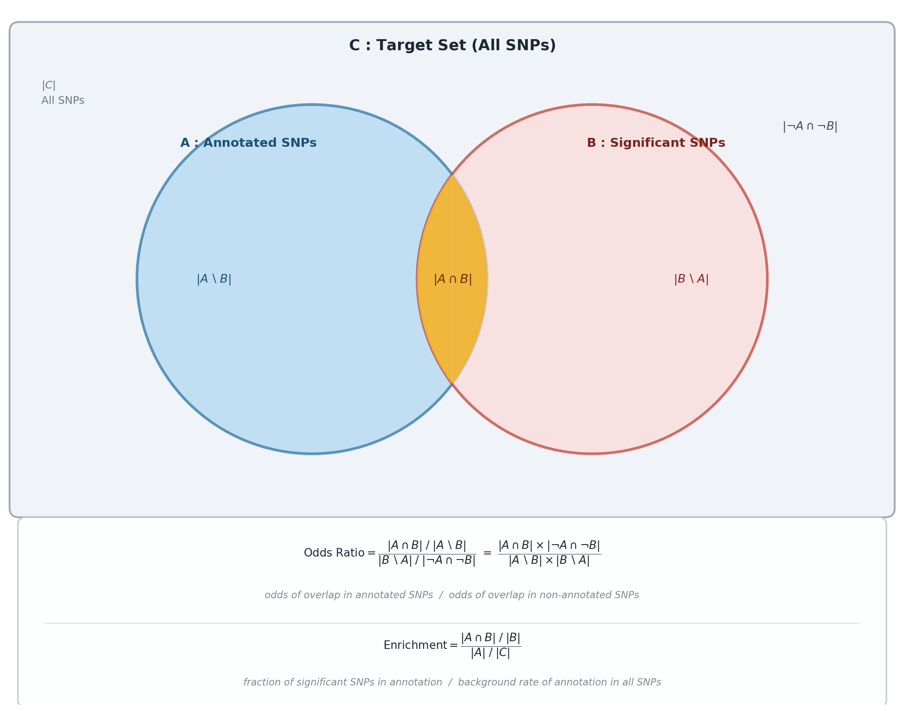

Chromosome-Specific Enrichment Analysis of Annotations Using Block Jackknife#
Description#
Chromosome-specific enrichment analysis for genomic annotations using a block jackknife. For each annotation it computes an odds ratio (OR) and an enrichment statistic, leaving out one chromosome at a time to obtain block-jackknife standard errors. This quantifies how strongly significant variants overlap each annotation relative to the genome.
Definitions and Test Statistics#
Odds Ratio (OR)#
Strength of association between significant variants and an annotation:
where \(A\) = SNPs in the annotation, \(B\) = significant SNPs, \(AB\) = their intersection, and noA-noB = SNPs in neither.
Enrichment#
Whether an annotation contains a higher proportion of significant SNPs than expected by chance:
i.e. proportion of significant SNPs in the annotation divided by proportion of all SNPs in the annotation, where the Target Set is all SNPs in the genome or study region.
Standard Error (LOCO block jackknife)#
Standard errors are estimated by removing one chromosome at a time and recomputing the statistic, capturing variability due to genomic structure. With \(\theta_i\) the statistic (\(OR_i\) or \(\text{Enrichment}_i\)) excluding chromosome \(i\), \(\bar{\theta}\) its mean, and \(N\) the number of chromosomes (22 for autosomes):
import numpy as np
import matplotlib.pyplot as plt
from matplotlib.patches import PathPatch, Circle, FancyBboxPatch
from matplotlib.path import Path
def make_lens_path(c1, c2, r, n=400):
x1, y1 = c1; x2, y2 = c2
d = np.hypot(x2 - x1, y2 - y1)
if d >= 2 * r:
return None
a = np.arccos(d / (2 * r))
phi = np.arctan2(y2 - y1, x2 - x1)
t1 = np.linspace(phi - a, phi + a, n)
t2 = np.linspace(phi + np.pi + a, phi + np.pi - a, n)
verts = (list(zip(x1 + r*np.cos(t1), y1 + r*np.sin(t1))) +
list(zip(x2 + r*np.cos(t2), y2 + r*np.sin(t2))) +
[(x1 + r*np.cos(phi - a), y1 + r*np.sin(phi - a))])
codes = [Path.MOVETO] + [Path.LINETO]*(2*n - 1) + [Path.CLOSEPOLY]
return Path(verts, codes)
fig, ax = plt.subplots(figsize=(14, 11))
ax.set_xlim(0, 14); ax.set_ylim(0, 11); ax.axis('off')
fig.patch.set_facecolor('white')
# Background box (C)
bg = FancyBboxPatch((0.2, 3.1), 13.6, 7.5, boxstyle='round,pad=0.15',
facecolor='#F0F3F7', edgecolor='#99A9BB',
linewidth=2.0, zorder=0)
ax.add_patch(bg)
ax.text(7.0, 10.38, r'$\mathbf{C}$ : Target Set (All SNPs)',
ha='center', va='center', fontsize=17, fontweight='bold', color='#1C2833')
ax.text(0.55, 9.85, r'$|C|$' + '\nAll SNPs',
ha='left', va='top', fontsize=12, color='#707B7C', linespacing=1.5)
# Circles
cx_a, cy, r = 4.8, 6.7, 2.75
cx_b = 9.2
circ_a = Circle((cx_a, cy), r, facecolor='#AED6F1', edgecolor='#2471A3',
linewidth=3.0, alpha=0.70, zorder=1)
circ_b = Circle((cx_b, cy), r, facecolor='#FADBD8', edgecolor='#C0392B',
linewidth=3.0, alpha=0.70, zorder=1)
ax.add_patch(circ_a); ax.add_patch(circ_b)
lens = PathPatch(make_lens_path((cx_a, cy), (cx_b, cy), r),
facecolor='#F0B429', edgecolor='none', alpha=0.90, zorder=2)
ax.add_patch(lens)
ax.text(cx_a - 1.0, cy + r*0.78, r'$\mathbf{A}$ : Annotated SNPs',
ha='center', va='center', fontsize=14, fontweight='bold', color='#1A5276')
ax.text(cx_b + 1.0, cy + r*0.78, r'$\mathbf{B}$ : Significant SNPs',
ha='center', va='center', fontsize=14, fontweight='bold', color='#7B241C')
mid_x = (cx_a + cx_b) / 2
ax.text(cx_a - 1.55, cy, r'$|A \setminus B|$',
ha='center', va='center', fontsize=13, color='#1A5276', style='italic')
ax.text(mid_x, cy, r'$|A \cap B|$',
ha='center', va='center', fontsize=14, fontweight='bold', color='#6E2F05', style='italic')
ax.text(cx_b + 1.55, cy, r'$|B \setminus A|$',
ha='center', va='center', fontsize=13, color='#7B241C', style='italic')
ax.text(13.05, 9.1, r'$|\neg A \cap \neg B|$',
ha='right', va='center', fontsize=13, color='#4A4A4A', style='italic')
# Formula box
ax.add_patch(FancyBboxPatch((0.3, 0.08), 13.4, 2.75,
boxstyle='round,pad=0.12',
facecolor='#FDFEFE', edgecolor='#BDC3C7',
linewidth=1.4, zorder=0))
# OR: formula centered, explanation centered below
ax.text(7.0, 2.38,
r'$\mathrm{Odds\ Ratio} = \dfrac{|A \cap B|\;/\;|A \setminus B|}'
r'{|B \setminus A|\;/\;|\neg A \cap \neg B|}'
r'\ =\ \dfrac{|A \cap B| \times |\neg A \cap \neg B|}'
r'{|A \setminus B| \times |B \setminus A|}$',
ha='center', va='center', fontsize=12.5, color='#1C2833')
ax.text(7.0, 1.72,
'odds of overlap in annotated SNPs / odds of overlap in non-annotated SNPs',
ha='center', va='center', fontsize=11, color='#7F8C8D', style='italic')
# Divider
ax.plot([0.6, 13.4], [1.28, 1.28], color='#D5D8DC', linewidth=0.8)
# Enrichment: formula centered, explanation centered below
ax.text(7.0, 0.92,
r'$\mathrm{Enrichment} = \dfrac{|A \cap B|\;/\;|B|}{|A|\;/\;|C|}$',
ha='center', va='center', fontsize=12.5, color='#1C2833')
ax.text(7.0, 0.35,
'fraction of significant SNPs in annotation / background rate of annotation in all SNPs',
ha='center', va='center', fontsize=11, color='#7F8C8D', style='italic')
plt.tight_layout(pad=0.2)
plt.show()

Input#
significant_variants_path
Format: RDS file containing significant variants. This must contain some variants that are not in the
baseline_anno_pathinput.Columns:
chr: Chromosome number (integer, required).pos: Genomic position (integer, required).
Example:
chr pos 1 12345 1 67890
baseline_anno_path
Format: RDS file containing a tabular data frame with baseline annotations. This must contain some variants that are not in the
significant_variants_pathinput.Columns:
CHR: Chromosome number (integer, required).
BP: Genomic base pair position (integer, required).
SNP: SNP ID (character, optional).
CM: Centimorgan position (numeric, optional).
base: Base-level information (integer, optional).
Annotation columns: Binary columns (0/1, required) for various genomic annotations (e.g.,
Coding_UCSC,Conserved_LindbladToh,CTCF_Hoffman, etc.). Multiple such annnotation columns may exist in the input file. The columns start index of this file is given in the--annotations-startargument.
Example:
CHR BP SNP CM base Coding_UCSC Coding_UCSC.flanking.500 ⋯ Human_Enhancer_Villar Human_Enhancer_Villar.flanking.500 1 11008 rs575272151 0 1 0 0 ⋯ 0 0 1 11012 rs544419019 0 1 0 0 ⋯ 0 0 1 13110 rs540538026 0 1 0 0 ⋯ 0 0 1 13116 rs62635286 0 1 0 0 ⋯ 0 0
Output#
enrichment_results.rds
Format: RDS file containing the following components:
summary: A data frame summarizing the OR, OR_SE, Enrichment, and Enrichment_SE for each annotation column.Annotation OR OR_SE Enrichment Enrichment_SE Coding_UCSC 1.23 0.12 0.85 0.10 Conserved_LindbladToh 0.98 0.08 1.12 0.05 Human_Enhancer_Villar 1.45 0.15 1.30 0.12
OR_blockJacknife: A matrix (22 rows for chromosomes × annotation columns) of log2-transformed OR values.Coding_UCSC Conserved_LindbladToh Human_Enhancer_Villar 0.12 -0.02 0.25 0.15 0.01 0.18 ⋮ ⋮ ⋮
Enrichment_blockJacknife: A matrix (22 rows for chromosomes × annotation columns) of enrichment values.OR: A numeric vector of mean log2-transformed OR values across chromosomes for each annotation column.Enrichment: A numeric vector of mean enrichment values across chromosomes for each annotation column.OR_sd: A numeric vector of standard errors for OR values across chromosomes for each annotation column.Enrichment_sd: A numeric vector of standard errors for enrichment values across chromosomes for each annotation column.annotations: A list of annotation column names.
Steps#
Step 1. Run the chromosome-specific enrichment analysis (enrichment).
Compares the significant-variant set against the baseline annotation, computing per-annotation odds ratios and enrichment with a 22-chromosome block-jackknife for standard errors. Writes <name>.enrichment_results.rds plus a summary .tsv.gz.
sos run pipeline/eoo_enrichment.ipynb enrichment \
--significant_variants_path input/enrichment/protocol_example.eoo_significant_variants.tsv.gz \
--baseline_anno_path input/enrichment/protocol_example.eoo_baseline_annotation.tsv \
--trait protocol_example \
--annotation-name baseline \
--cwd output/eoo_enrichment
Anticipated Results#
Writes <annotation>.enrichment_results.rds (per-annotation OR, Enrichment, and their block-jackknife standard errors) plus a .tsv.gz summary. Annotations with a higher proportion of significant variants than expected show OR and Enrichment above 1.
Command interface#
List the workflow and its options:
sos run pipeline/eoo_enrichment.ipynb -h
Workflow implementation#
[global]
# Path to the work directory of the analysis.
parameter: cwd = path('output')
parameter: significant_variants_path = path
parameter: baseline_anno_path = path
# Number of threads
parameter: numThreads = 8
# For cluster jobs, number commands to run per job
parameter: trait = str
parameter: annotation_name = str
name = f"{trait}.{annotation_name}"
parameter: job_size = 1
parameter: walltime = '12h'
parameter: mem = '16G'
[enrichment]
parameter: annotations_start = 7
output: enrichment = f'{cwd:a}/{step_name}/{name}.enrichment_results.rds'
task: trunk_workers = 1, trunk_size = job_size, walltime = walltime, mem = mem, cores = numThreads, tags = f'{step_name}_{_output[0]:bnn}'
R: expand = '${ }', stderr = f'{_output[0]}.stderr', stdout = f'{_output[0]}.stdout'
library(tidyverse)
# Helper function to read different file formats
read_input_file <- function(file_path) {
# Get full file extension (e.g., "txt.gz")
full_ext <- sub(".*\\.", "", file_path)
# Get base extension (e.g., "txt" from "txt.gz")
base_ext <- tools::file_ext(sub("\\.gz$", "", file_path))
if (full_ext == "rds") {
return(readRDS(file_path))
} else if (base_ext %in% c("txt", "tsv")) {
return(data.table::fread(file_path))
} else {
stop(paste("Unsupported file format:", full_ext))
}
}
calculate_OR_enrichment <- function(set1, set2, target_set = NULL){
if (is.null(target_set)){
target_set <- unique(union(set1, set2))
}
A <- intersect(set1, target_set)
B <- intersect(set2, target_set)
AB <- intersect(A, B)
AnoB <- setdiff(A, AB)
noAB <- setdiff(B, AB)
noAnoB <- setdiff(target_set, c(A,B))
if (length(noAB) == 0 || length(AnoB) == 0) {
OR <- Enrichment <- 1
} else {
OR <- (length(AB) / length(AnoB)) * (length(noAnoB) / length(noAB))
Den <- length(A) / length(target_set)
Num <- length(AB) / length(B)
Enrichment <- Num / Den
}
return(list("OR" = OR,
"Enrichment" = Enrichment))
}
# Start timing
start_time <- Sys.time()
print(paste("Job started at:", start_time))
# Load input data
print("Loading input data...")
your_anno <- read_input_file("${significant_variants_path}")
baseline <- read_input_file("${baseline_anno_path}")
print("Data loaded successfully!")
if ("chr" %in% colnames(baseline) && !"CHR" %in% colnames(baseline)) {
names(baseline)[names(baseline) == "chr"] <- "CHR"
}
if ("pos" %in% colnames(baseline) && !"BP" %in% colnames(baseline)) {
names(baseline)[names(baseline) == "pos"] <- "BP"
}
if (!is.numeric(baseline$CHR)) {
baseline$CHR <- as.numeric(gsub("chr", "", baseline$CHR))
}
# Process significant variants
your_anno <- sapply(1:nrow(your_anno), function(i) {
a <- your_anno[i,]
if (is.numeric(a$chr) || grepl("^[0-9]+$", a$chr)) {
paste0("chr", a$chr, ":", a$pos)
} else {
paste0(a$chr, ":", a$pos)
}
})
print("Processed significant variants.")
# Process baseline annotation
baseline <- baseline %>%
mutate(chr_bp = paste0("chr", CHR, ":", BP))%>%
relocate(chr_bp, .before = 1)
print("Processed baseline annotation.")
# Get annotation columns
annotations_start = ${annotations_start}
annotations <- colnames(baseline)[annotations_start:ncol(baseline)]
print(paste("Number of annotations:", length(annotations)))
# Initialize matrices for results
OR_blockJacknife <- Enrichment_blockJacknife <- matrix(NA,
nrow = 22,
ncol = length(annotations))
colnames(OR_blockJacknife) <- colnames(Enrichment_blockJacknife) <- annotations
# Perform leave-one-chromosome-out analysis
print("Starting LOCO analysis...")
for (i.chr in 1:22){
chr <- i.chr
pp <- which(baseline$CHR == chr)
baseline.jk <- baseline[-pp,]
target_set <- baseline.jk$chr_bp
for (i in 1:length(annotations)){
anno <- baseline %>% select(annotations[i])
pos <- which(anno == 1)
baseline.tmp <- baseline$chr_bp[pos]
res <- calculate_OR_enrichment(baseline.tmp, your_anno, target_set = target_set)
OR_blockJacknife[i.chr, i] <- res$OR
Enrichment_blockJacknife[i.chr, i] <- res$Enrichment
}
print(paste("Processed chromosome", i.chr, "of 22"))
}
# Calculate final statistics
print("Calculating final statistics...")
OR <- colMeans(log2(OR_blockJacknife), na.rm = TRUE)
Enrichment <- colMeans(Enrichment_blockJacknife, na.rm = TRUE)
Enrichment_log2 <- colMeans(log2(Enrichment_blockJacknife), na.rm = TRUE)
OR_sd <- Enrichment_sd <- OR_sd_log2 <- Enrichment_sd_log2 <- numeric(length(annotations))
for (j in 1:length(annotations)){
OR_sd[j] <- sqrt(var(OR_blockJacknife[,j], na.rm = TRUE) * 21^2 / 22)
Enrichment_sd[j] <- sqrt(var(Enrichment_blockJacknife[,j], na.rm = TRUE) * 21^2 / 22)
OR_sd_log2[j] <- sqrt(var(log2(OR_blockJacknife[,j]), na.rm = TRUE) * 21^2 / 22)
Enrichment_sd_log2[j] <- sqrt(var(log2(Enrichment_blockJacknife[,j]), na.rm = TRUE) * 21^2 / 22)
}
# Calculate Z-scores and p-values
Enrichment_z_scores <- Enrichment / Enrichment_sd
Enrichment_p_values <- pchisq(Enrichment_z_scores^2, 1, lower.tail = FALSE)
Enrichment_log2_z_scores <- Enrichment_log2 / Enrichment_sd_log2
Enrichment_log2_p_values <- pchisq(Enrichment_log2_z_scores^2, 1, lower.tail = FALSE)
# Create summary data frame
summary_df <- data.frame(
Annotation = annotations,
OR = 2^OR,
OR_SE = OR_sd,
OR_log2 = OR,
OR_SE_log2 = OR_sd_log2,
Enrichment = Enrichment,
Enrichment_SE = Enrichment_sd,
Enrichment_log2 = Enrichment_log2,
Enrichment_SE_log2 = Enrichment_sd_log2,
Enrichment_Z_score = Enrichment_z_scores,
Enrichment_P_value = Enrichment_p_values,
Enrichment_log2_z_scores = Enrichment_log2_z_scores,
Enrichment_log2_p_values = Enrichment_log2_p_values
)
print("Summary data frame created.")
# Prepare results
results <- list(
"summary" = summary_df,
"OR_blockJacknife" = OR_blockJacknife,
"Enrichment_blockJacknife" = Enrichment_blockJacknife,
"OR" = OR,
"Enrichment" = Enrichment,
"OR_sd" = OR_sd,
"Enrichment_sd" = Enrichment_sd,
"Enrichment_Z_scores" = Enrichment_z_scores,
"Enrichment_P_values" = Enrichment_p_values,
"annotations" = annotations
)
print("Results prepared.")
# Save results
saveRDS(results, '${_output['enrichment']}', compress='xz')
print(paste("Results saved to:", '${_output['enrichment']}'))
# Save summary table as TSV gz
summary_tsv_path <- sub("\\.rds$", "_summary.tsv.gz", '${_output['enrichment']}')
data.table::fwrite(summary_df, summary_tsv_path, sep="\t", quote=FALSE, compress="gzip")
print(paste("Summary table saved to:", summary_tsv_path))
# End timing
end_time <- Sys.time()
print(paste("Job ended at:", end_time))
print(paste("Total time elapsed:", as.numeric(difftime(end_time, start_time, units = "mins")), "minutes"))